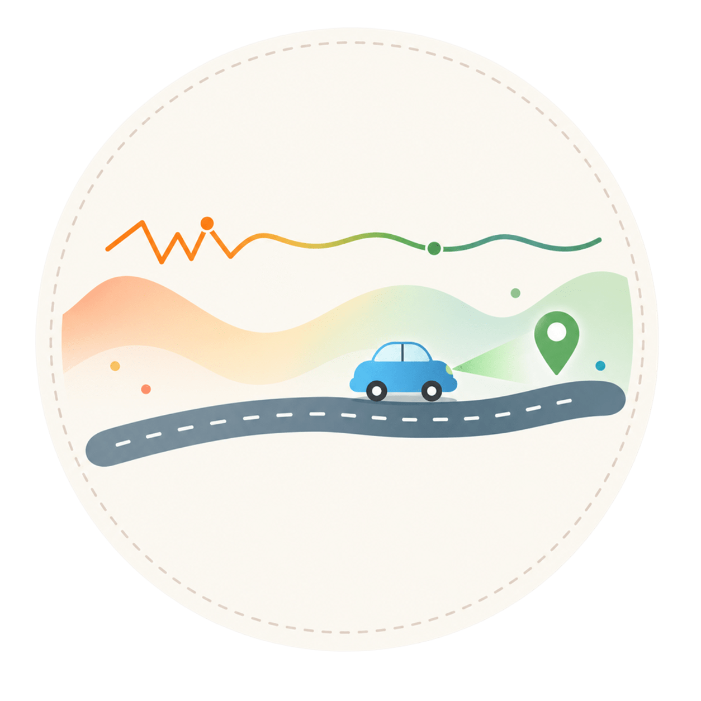
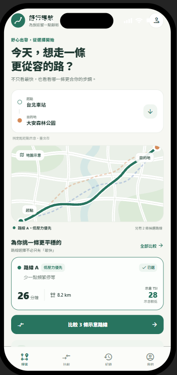
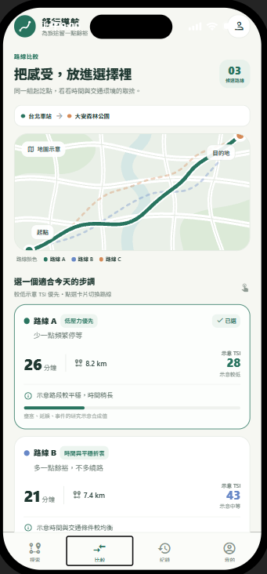
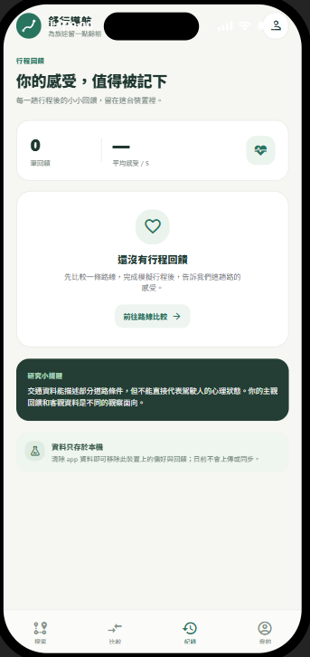
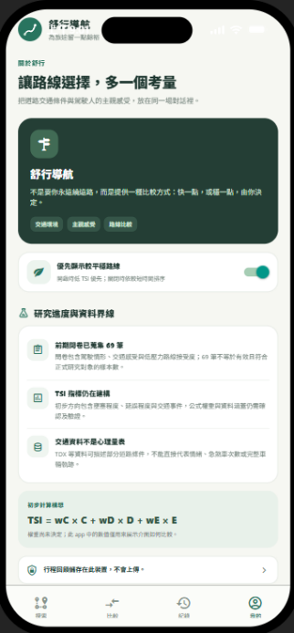

最讓人有壓力的情境01 / 07
4.09/ 5前車突然切入，或未打方向燈變換車道
前導問卷情境平均分，分數越高代表主觀壓力越強

舒行導航為舒服抵達，多想一步 看看路線比較交通數據 × 駕駛壓力研究
舒行導航把交通環境資料轉成容易理解的壓力指標，讓駕駛人在出發前比較路線，不只看哪條最快，也能考慮哪條走起來更從容。

THE QUESTION
現在的導航多以時間和距離規劃路線。但頻繁煞停、複雜路口、道路施工或車流交織，也會讓一趟行程變得緊繃。
這項研究想做的是一個「出發前的路線比較輔助工具」：整理道路車速、延誤、交通事件與道路環境，再參考駕駛人的主觀感受，呈現各路線的交通壓力差異。
研究範圍臺北市固定起訖點的 2–3 條候選路線；目前聚焦於模型與介面原型的建置及驗證。
客觀交通資料能否反映駕駛壓力？我們能否把它轉化成更容易比較的路線資訊？
?EARLY DISCOVERY
前導需求調查
68 份問卷 12 位訪談
前車突然切入，或未打方向燈變換車道
受訪者表示願意多花至少 3 分鐘，換取較低壓力路線
減少複雜車流與汽機車混行的情境，獲得最高接受度
資料來源：舒行導航前導需求調查（問卷 68 份、訪談 12 位）。百分比依問卷中時間容忍度選項加總。前導調查結果用於研究方向探索，不代表所有駕駛人。
HOW IT WORKS
交通環境壓力指標（Traffic Stress Index, TSI）規劃以 0–100 分呈現，分數越高代表環境壓力越大。
權重將參考正式問卷結果進行設定，並檢查壅塞與延誤之間是否重複計算。
比較路段車速與速限或自由車流速度的差異。
估算尖峰或當前行車時間相較離峰增加的幅度。
納入施工、事故、車道封閉與複雜道路環境。
資料如何取得？
規劃整合交通部 TDX 即時與歷史路況、道路事件資料，並以地圖資料與現場觀察補充道路特徵。部分道路若缺乏即時偵測資料，將以歷史行車時間及可取得的替代資料建立基準。
DESIGN EXPLORATION
介面以出發前規劃為主，
避免行車中操作造成分心。


